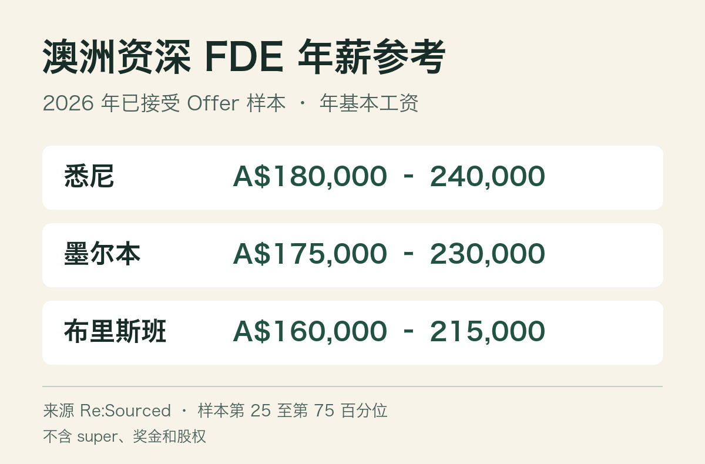

11 月 10 日，1 澳元还能换约 4.62 元人民币。到 11 月 20 日，澳洲央行公布的参考汇率已回到 4.45 元附近，10 天跌了约 3.7%。
同一周，澳洲统计局公布，10 月季调失业率升至 4.9%，为 2021 年 10 月以来最高，就业人数比上月减少约 4.4 万。
准备 2027 年找工作，先问自己一个更具体的问题：如果现在就要换工作，我能拿出哪一段经验，证明自己做得了下一份工作？
11 月 19 日，匠人学院创始人 Lightman 在直播里点了四个方向。工程、产品、销售的分工都在变，尤其是 FDE。这个岗位把客户最早的那句“我们想用 AI”，一直跟到系统上线、有人使用。
2027 年，四个值得提前准备的岗位

01｜AI Engineer：让 AI 系统稳定运行
拿报修助手举例。它要读政策、查账户、让客户确认，再提交工单。点了两次会不会重复提交？接口超时要不要重试？什么情况必须转人工？
后端、全栈、数据工程和云平台经验都能接上这条路。准备作品时，可以把测试用例、故障日志和修复过程一并留下。
02｜FDE：把模糊的客户需求做到上线
客户说“我们想用 AI 做客服”。FDE 得问清楚：一线同事是花时间在查政策、分工单，还是处理退款？谁可以给数据？哪一段可以先上线？
Forward Deployed Engineer 常译作一线交付工程师。你要和客户定目标、定范围，还要参与开发和集成，有些岗位会一路负责到生产环境、使用效果和交接。
03｜AI Product Manager：决定什么值得做
会议助手能提取行动项。AI 产品经理得决定：没听清负责人时要不要追问？发现重复任务怎么办？未经用户确认，可以直接往任务板写入吗？
原型能自己搭。真正有分量的是，你看过真实用户怎么操作，能说明哪类错误会影响信任、什么结果足以支持上线。
04｜IT Sales：推动企业做出采购决定
同一套 AI 系统，业务想少漏单，技术团队想知道能不能接上，安全要看数据权限，采购关心预算和合同。
企业技术销售要找到决策人，和售前一起做演示或试点，再用客户认可的效果推进采购。你需要理解一家公司怎么做决定。
澳洲现在有哪些 FDE 岗位？
搜索时可以同时看 Forward Deployed Engineer、Forward Deployed AI Consultant、AI Deployment Engineer。公司可能用不同名称，具体做什么要看招聘说明里有没有客户调研、系统接入、上线和效果跟踪。
OpenAI｜悉尼，企业生产部署
悉尼 FDE 要做需求发现、技术定范围、系统设计和生产上线，并跟踪使用情况和实际工作流的变化。招聘要求至少 5 年工程或技术部署经验，其中要包含面向客户的工作。

Google Cloud｜悉尼或墨尔本，Staff 工程岗
岗位要求 8 年云计算或面向客户的技术经验，还要能部署、扩展和排查生产环境中的大模型应用。客户有旧系统、现成 API 和安全规则，你得把 AI 接进去，再盯评测、成本和延迟。
Endla｜布里斯班，行业软件交付
Endla 做井场和管线相关的软件。它的 FDE 要理解客户现场，接数据、做原型、排查问题，也要培训用户，让工具进入日常工作。做过行业软件或实施的人，可以对照这类岗位看自己熟悉哪段。
ADAPTOVATE｜悉尼，Graduate / Associate AI 咨询
这条更适合职业早期的人看。工作包括访谈客户、分析流程、做 AI 原型、和用户一起试用。招聘也接受毕业生从课程、实习、黑客松或个人项目中拿出作品，说明它解决了什么问题。
企业自己也在训练这类人才。2026 年 10 月，澳洲联邦银行宣布首批 20 名内部工程师参加 Anthropic 的 Claude Frontier Academy，练习需求、设计、测试、安全和部署。
FDE 薪资怎么看？先分清职级和口径
Re:Sourced 的 2026 年数据里，资深 FDE 的年基本工资参考是：悉尼 18 万—24 万澳元，墨尔本 17.5 万—23 万澳元，布里斯班 16 万—21.5 万澳元。

这些区间来自该机构已接受的 Offer 样本，取第 25 至第 75 百分位。口径是年基本工资。养老金（super）、奖金和股权按各雇主的条款另算。
ADAPTOVATE 悉尼那条 Graduate / Associate 咨询岗位，广告标的是 A$100,000–120,000／年。这是一条职位的公开区间。NSW 远程岗位里，Procore 公布的 Forward Deployment Engineer 基本年薪为 A$131,280–180,510，奖金及股权另看资格。读招聘信息时，先核对城市、职级和工作范围，再比较数字。
为什么光靠自学不够？
假设一家零售企业请你做客服 AI。原方案要接入整个知识库，到了现场才发现，历史资料还没通过安全审批，客服团队只给你两周试点。
你还有一周要跟三方对齐。业务要看工单处理能不能变快，安全团队要限住数据访问，客服主管要确定退款由谁批。任何一方没确认，方案都得改。
OpenAI 的 FDE 团队也分享过一个实际项目。一家电信公司想把文字客服扩到电话，团队和客户要先测口音、语调、延迟和答复质量，再决定系统是否能上线。到了现场，评测标准也要随客户的工作方式来定。
回到零售试点，这就是 FDE 要反复练的五件事。
① 问清楚业务问题。 看工单记录、访谈一线同事，找出每天耗时的那一步。先拿到当前处理时间、退回原因或积压量，后面才能比较试点效果。
② 把范围和预算说清楚。 第一版只查已获批政策、生成回复草稿。退款走人工审批，旧资料等授权到位再接入。让客户知道两周能交什么，也知道还有什么要决定。
③ 把系统接好。 接数据、接口和身份权限。处理超时、重复触发和失败转人工，把日志留给后续维护的人。
④ 用样本验收。 拿历史工单重跑，检查过期政策、重复提交、错分和越权，记录失败后怎么修改。试点前定好暂停条件和回退方式。
⑤ 让一线能接手。 上线后看哪些人真的用了、处理时间和返工量怎么变。把审批、操作步骤和出问题找谁写进交接材料。

教程能给你一个步骤。现场会给你一个没开权限的数据源、一个变小的预算，还有一位要在周五看到结果的客户。
自学可以先练 Python、API、Agent 和评测。下一步，找一个校内项目、实习任务或在职流程，请真正做这项工作的人试用，让他指出哪里不顺，再拿反馈改一轮。把需求为什么变、方案为什么改、最后怎么验收写下来。 这段过程在面试里比一张功能截图有用。
想练 FDE，从自己擅长的那一段开始
已经能独立开发和调试 AI 应用，可以看 FDE Tech 职业进阶班。 10 周练企业交付，从客户和系统调查到方案与预算，再做系统接入、权限控制、评测、试点和交接。你要带着方案接受追问，解释边界、风险和工程取舍。
做过业务、产品、咨询、BA 或项目交付，可以看 FDE Business 职业进阶班。 8 周从一个业务流程入手，练访谈、工作流验证、方案汇报和试点。比如把网站和邮件里的询盘合到一起，处理重复记录，起草补问邮件，再用原始记录回放检查有没有漏单或误发。
如果你已经有一个项目，先写下这三句：谁在用？我做了什么取舍？怎么知道结果达标？ 写不清的那一段，就是值得补的经验。
长按识别下方二维码，查看匠人学院两门 FDE 职业进阶班的课程安排和适合人群。
数据与招聘来源｜澳洲央行（RBA）、澳洲统计局（ABS）、Re:Sourced 2026 薪资指南、各雇主招聘原文和澳洲联邦银行公告。汇率及职位页面核对日期为 2026 年 11 月 20 日。